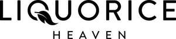

Trade Mark Journal No.2025/036 5 September 2025
UK00004221285 19 June 2025 (30,35)

- Class 30
- Sweets; Candies [sweets]; Sweets [candy]; Sugar-free sweets; Caramels [sweets]; Sugarfree sweets; Sugarless sweets; Peppermint sweets; Sweets (Peppermint -); Sweets (Non-medicated -) being acidulated caramel sweets; Gum sweets; Sweetmeats being candies; Boiled sweets; Sweetmeats [candy]; Non-medicated sweets; Sweets (Non-medicated -); Sweets (Non-medicated -) in the nature of sugar confectionery; Sweetmeats [candy] being flavoured with fruit; Foamed sugar sweets; Sweets (Non-medicated -) in the nature of toffees; Peppermint sweets [other than for medicinal use]; Gum sweets (Non-medicated -); Mint-based sweets; Chocolate candies; Chewing sweets (Non-medicated -); Mint flavoured sweets (Non-medicated -); Chocolate desserts; Sweets (Non-medicated -) in the nature of caramels; Candies; Sweetmeats [candy] containing fruit; Prepared desserts [confectionery]; Chocolate decorations for confectionery items; Panned sweets (Non-medicated -); Sweets (Non-medicated -) being acidulated; Candy decorations for cakes; Caramels [candies]; Sherbets [confectionery]; Sugarless candies; Chocolate-coated sugar confectionery; Chocolate confections; Chocolate confectionery; Chocolate for confectionery and bread; Sweetmeats; Chocolate candy with fillings; Chocolates; Sugar candy [for food]; Sugar confectionery; Flavoured sugar confectionery; Fruit jellies [confectionery]; Jellies (Fruit -) [confectionery]; Sugar candies (Non-medicated -); Chocolate decorations for cakes; Chocolate flavoured confectionery; Fruit confectionery; Chocolate confectionary; Non-medicated confectionery candy; Caramels [candy]; Puddings for use as desserts; Boiled sugar sweetmeats; Mint based sweets [non-medicated]; Foodstuffs made of sugar for sweetening desserts; Sal ammoniac liquorice sweets (Non-medicated -); Sweets (Non-medicated -) being honey based; Sherbet [confectionery]; Liquorice [confectionery]; Boiled sugar confectionery; Pastilles [confectionery]; Candy cake decorations; Sweets (Non-medicated -) containing herbal flavourings; Chocolate confectionery products; Confectionery chocolate products; Gummy candies; Confectionery; Non-medicated chocolate confectionery; Liquorice flavoured confectionery; Starch-based candies; Confectionery items coated with chocolate; Sherbets [confectionery ices]; Fondants [confectionery]; Sugar confectionery (Non-medicated -); Non-medicated sugar confectionery; Fruit jelly candy; Peppermint for confectionery; Milk chocolates; Candy coated confections; Candy; Mints [candies, non-medicated]; Candy mints; Toffees; Liquorice; Licorice; Stick liquorice [confectionery]; Aniseed; Herbal honey lozenges [confectionery]; Peppermint pastilles [confectionery], other than for medicinal use; Mint flavoured confectionery (Non-medicated -); Toffee; Lozenges [confectionery]; Chocolate sweets; Honeycomb toffee; Peppermint candy; Non-medicated mint confectionery; Foamed sugar pastilles; Non-medicated confectionery having toffee fillings; Candy with caramel; Chocolate; Boiled confectionery; Non-medicated confectionery containing chocolate; Lozenges [non-medicated confectionery]; Confectionery containing jelly; Non-medicated flour confectionery coated with chocolate; Milk chocolate; Candy with cocoa; Filled chocolate; Non-medicated chocolate; Confectionery items formed from chocolate; Ginger candies; Vegetarian liquorice candies; Aniseed sweets; Chewing sweets (Non-medicated -) having fruit fillings; Vegan candies; Vegan sweets; Caramel sweets; Sweets containing caramel.
- Class 35
- Retail services in relation to confectionary, Chocolate, Liquorice for pharmaceutical purposes, Stick liquorice for pharmaceutical purposes, Sweets, Candies [sweets], Sweets [candy], Sugar-free sweets, Caramels [sweets], Sugarfree sweets, Sugarless sweets, Peppermint sweets, Sweets (Peppermint -), Sweets (Non-medicated -) being acidulated caramel sweets, Gum sweets, Sweetmeats being candies, Boiled sweets, Sweetmeats [candy], Non-medicated sweets, Sweets (Non-medicated -), Sweets (Non-medicated -) in the nature of sugar confectionery, Sweetmeats [candy] being flavoured with fruit, Maltitol-sweetened sweets, Foamed sugar sweets, Sweets (Non-medicated -) in the nature of toffees, Peppermint sweets [other than for medicinal use], Gum sweets (Non-medicated -), Mint-based sweets, Sweets (candy) and candy bars, Chocolate candies, Chewing sweets (Non-medicated -), Mint flavoured sweets (Non-medicated -), Chocolate desserts, Sweets (Non-medicated -) in the nature of caramels, Candies, Sweetmeats [candy] containing fruit, Chocolate pastries, Prepared desserts [confectionery], Chocolate decorations for confectionery items, Panned sweets (Non-medicated -), Sweets (Non-medicated -) being acidulated, Candy decorations for cakes, Caramels [candies], Sweets (Non-medicated -) in the nature of fudge, Sherbets [confectionery], Sugarless candies, Chocolate-coated sugar confectionery, Sweets (Non-medicated -) in the nature of nougat, Chocolate confections, Chocolate confectionery, Chocolate for confectionery and bread, Sweetmeats, Chocolate candy with fillings, Chocolates, Sugar candy [for food], Sugar confectionery, Flavoured sugar confectionery, Chewing sweets (Non-medicated -) having liquid fruit fillings, Fruit jellies [confectionery], Jellies (Fruit -) [confectionery], Sugar candies (Non-medicated -), Chocolate decorations for cakes, Chocolate flavoured confectionery, Sugar-free mint candies, cakes, and biscuits (cookies), Fruit confectionery, Chocolate confectionary, Non-medicated confectionery candy, Caramels [candy], Puddings for use as desserts, Boiled sugar sweetmeats, Mint based sweets [non-medicated], Foodstuffs made of sugar for sweetening desserts, Chocolate cakes, Sal ammoniac liquorice sweets (Non-medicated -), Sweets (Non-medicated -) being honey based, Sherbet [confectionery], Liquorice [confectionery], Biscuits [sweet or savoury], Candy [sugar], Boiled sugar confectionery, Pastilles [confectionery], Candy cake decorations, Chocolate biscuits, Sweets (Non-medicated -) being alcohol based, Sweets (Non-medicated -) containing herbal flavourings, Chocolate confectionery products, Confectionery chocolate products, Candy cake, Gummy candies, Confectionery, Non-medicated chocolate confectionery, Liquorice flavoured confectionery, Starch-based candies, Truffles [confectionery], Confectionery items coated with chocolate, Sherbets [confectionery ices], Fondants [confectionery], Sugar confectionery (Non-medicated -), Non-medicated sugar confectionery, Fruit jelly candy, Peppermint for confectionery, Biscuits flavoured with fruit, Milk chocolates, Candy coated confections, Candy, Mints [candies, non-medicated], Candy mints, Fruit cakes, Toffees, Liquorice, Licorice, Stick liquorice [confectionery], Aniseed, Herbal honey lozenges [confectionery], Peppermint pastilles [confectionery], other than for medicinal use, Peppermint bonbons [other than for medicinal use], Mint flavoured confectionery (Non-medicated -), Toffee, Marshmallow confectionery, Chocolates with mint flavoured centres, Lozenges [confectionery], Chocolate sweets, Mint for confectionery, Marzipan, Mallows [confectionery], Almond confectionery, Flavoured jelly crystals for making jelly confectionery, Peppermint candy, Chocolate truffles, Non-medicated mint confectionery, Biscuits containing chocolate flavoured ingredients, Nougat, Foamed sugar pastilles, having a chocolate flavoured coating, Non-medicated confectionery having toffee fillings, Candy with caramel, Liqueur chocolates, Flavourings of tea, Boiled confectionery, Non-medicated confectionery containing chocolate, Lozenges [non-medicated confectionery], Confectionery containing jelly, Chocolate coated biscuits, Coated nuts [confectionery], Non-medicated flour confectionery coated with chocolate, Liquorice fudge, Chocolate cake, Milk chocolate, Milk chocolate bars, Dairy chocolate, Chocolate bars, Chocolate eggs, Chocolate covered biscuits, Chocolate for toppings, Chocolate topping, Almonds covered in chocolate, Chocolate covered cakes, Candy with cocoa, Filled chocolate, Non-medicated chocolate, Substitutes (Chocolate -), Filled chocolate bars, Biscuits having a chocolate coating, Cocoa, Marshmallow filled chocolates, Confectionery items formed from chocolate, Caramel, Ginger candies, Vegetarian liquorice candies, Aniseed sweets, Chewing sweets (Non-medicated -) having fruit fillings, Vegan candies, Vegan sweets, Liquorice root, Caramel sweets, Sweets containing caramel, Liquorice powder, Liquorice syrup, Tea powder, Chocolate candies and sweets.
Guy's Magnets Ltd
Representative: Handsome I.P. Ltd